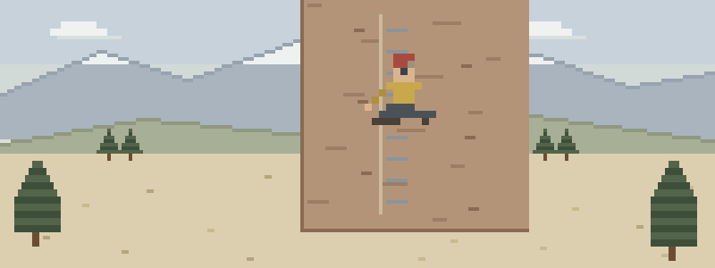

Mid-cable emergencies
- Thunder, and you’re bolted to a lightning rod. The forecast said afternoon storms; the group said one more pitch. Iron routes make the turnaround a medical decision — and if the sky wins, the silent patient gets help before the screaming one.
- The client who trained on hotel stairs. Halfway up, a fit-looking fifty-something goes gray, sweats through his shirt, and calls it "just the altitude." Crushing chest pressure on exertion has a protocol, and it starts with stopping.
- Slick rung, hard stop. A slip onto the lanyard smacks a wrist into iron. Splinting on a ledge, checking fingers before and after, and walking nine other people past the scene — that’s the whole job at once.
Clip through these in order
For climbers and operators both, this order pays off first:
- Patient Assessment — SAMPLE and vitals on a client you met two hours ago
- Medical Emergencies — mixed-ability groups bring unscreened medical histories
- Water & Lightning — you are climbing a lightning rod — plan like it
- Musculoskeletal Injuries — a slip caught by the lanyard still meets the iron on the way down
- Evacuation — a patient mid-cable changes the math for the whole group
Then pressure-test it
Interactive scenarios — one decision at a time, tempting mistakes included, debrief at the end:
- It’s Not Indigestion — the mid-route chest pain that gets called something else
- Treat the Dead First — lightning triage — the backwards rule that saves lives
- Sugar First — the shaky, confused client with a history nobody asked about
The certification question, honestly. “Wilderness First Aid” isn’t a regulated credential. No government body defines what a WFA card means — it means whatever the company that printed it says it means. What counts in front of a patient is whether you can do the work. This course teaches the work, free, and issues a record of completion — not a certificate, and we won’t pretend otherwise. Operators, your duty of care is defined by regulators, insurers, and guiding bodies — in most jurisdictions that means credentialed guides holding a current WFA- or WFR-level card, and a free record of completion satisfies none of it. Use this to raise your staff’s baseline between formal trainings, and to give clients a way to show up readier. If nobody requires you to hold a card, what you need are the skills, not the laminate.
What this is
Fifteen lessons, a 40-question knowledge check, sixteen practice scenarios, a printable field reference card, and a kit checklist. Free, no account, nothing recorded about you, source on GitHub. It teaches decision-making, not hands-on skill — practice the hands-on parts on a real, padded, complaining friend.
Other people who rope up: backcountry skiers & splitboarders · mountaineers & high-altitude climbers · ice climbers & mixed-terrain athletes